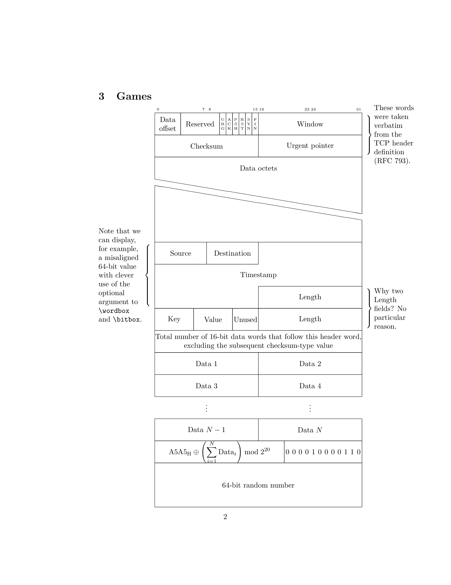

\documentclass{article}
\usepackage{bytefield}
\usepackage{xcolor}
\usepackage{graphicx}
\begin{document}
\begin{bytefield}{16}
\bitboxes*{1}{01000010} & \bitbox{4}{src\strut} &
\bitbox{4}{dest\strut} & \bitbox{4}{const\strut}
\end{bytefield}
\section{More testing}
\begin{bytefield}{16}
\bitheader{0,7,8,15} \\
\begin{rightwordgroup}{Header}
\bitbox{4}{Tag} & \bitbox{12}{Mask} \\
\bitbox{8}{Source} & \bitbox{8}{Destination}
\end{rightwordgroup} \\
\wordbox{3}{Data}
\end{bytefield}
\section{Games}
\medskip
\newcommand{\colorbitbox}[3]{%
\rlap{\bitbox{#2}{\color{#1}\rule{\width}{\height}}}%
\bitbox{#2}{#3}}
\definecolor{lightcyan}{rgb}{0.84,1,1}
\definecolor{lightgreen}{rgb}{0.64,1,0.71}
\definecolor{lightred}{rgb}{1,0.7,0.71}
\begin{bytefield}[bitheight=\widthof{~Sign~},
boxformatting={\centering\small}]{32}
\bitheader[endianness=big]{31,23,0} \\
\colorbitbox{lightcyan}{1}{\rotatebox{90}{Sign}} &
\colorbitbox{lightgreen}{8}{Exponent} &
\colorbitbox{lightred}{23}{Mantissa}
\end{bytefield}
\section{Games}
\medskip
\begin{bytefield}[bitheight=2.5\baselineskip]{32}
\bitheader{0,7,8,15,16,23,24,31} \\
\begin{rightwordgroup}{\parbox{6em}{\raggedright These words were taken
verbatim from the TCP header definition (RFC~793).}}
\bitbox{4}{Data offset} & \bitbox{6}{Reserved} &
\bitbox{1}{\tiny U\\R\\G} & \bitbox{1}{\tiny A\\C\\K} &
\bitbox{1}{\tiny P\\S\\H} & \bitbox{1}{\tiny R\\S\\T} &
\bitbox{1}{\tiny S\\Y\\N} & \bitbox{1}{\tiny F\\I\\N} &
\bitbox{16}{Window} \\
\bitbox{16}{Checksum} & \bitbox{16}{Urgent pointer}
\end{rightwordgroup} \\
\wordbox[lrt]{1}{Data octets} \\
\skippedwords \\
\wordbox[lrb]{1}{} \\
\begin{leftwordgroup}{\parbox{6em}{\raggedright Note that we can display,
for example, a misaligned 64-bit value with clever use of the
optional argument to \texttt{\string\wordbox} and
\texttt{\string\bitbox}.}}
\bitbox{8}{Source} & \bitbox{8}{Destination} &
\bitbox[lrt]{16}{} \\
\wordbox[lr]{1}{Timestamp} \\
\begin{rightwordgroup}{\parbox{6em}{\raggedright Why two Length fields?
No particular reason.}}
\bitbox[lrb]{16}{} & \bitbox{16}{Length}
\end{leftwordgroup} \\
\bitbox{6}{Key} & \bitbox{6}{Value} & \bitbox{4}{Unused} &
\bitbox{16}{Length}
\end{rightwordgroup} \\
\wordbox{1}{Total number of 16-bit data words that follow this
header word, excluding the subsequent checksum-type value} \\
\bitbox{16}{Data~1} & \bitbox{16}{Data~2} \\
\bitbox{16}{Data~3} & \bitbox{16}{Data~4} \\
\bitbox[]{16}{$\vdots$ \\[1ex]} &
\bitbox[]{16}{$\vdots$ \\[1ex]} \\
\bitbox{16}{Data~$N-1$} & \bitbox{16}{Data~$N$} \\
\bitbox{20}{\[ \mbox{A5A5}_{\mbox{\scriptsize H}} \oplus
\left(\sum_{i=1}^N \mbox{Data}_i \right) \bmod 2^{20} \]} &
\bitboxes*{1}{000010 000110} \\
\wordbox{2}{64-bit random number}
\end{bytefield}
\end{document}